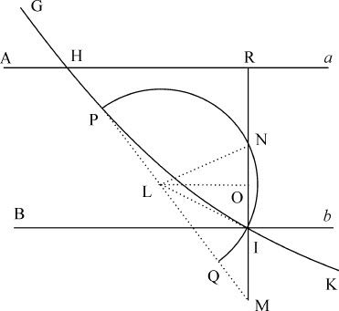
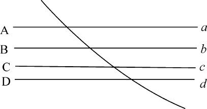
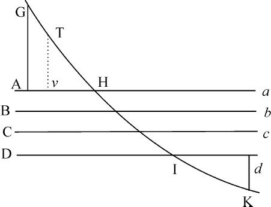
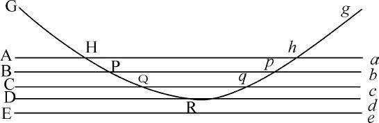
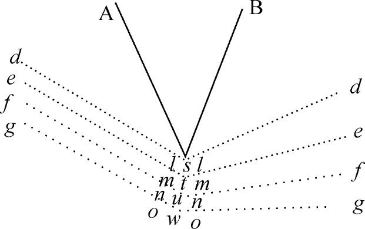
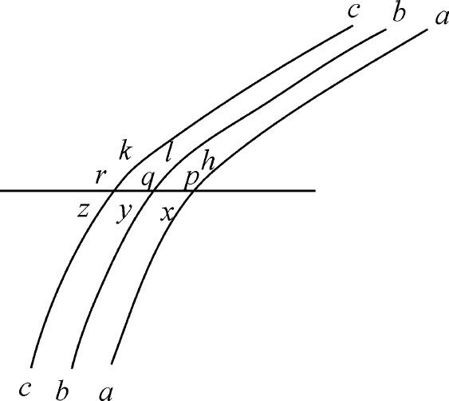
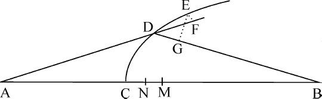
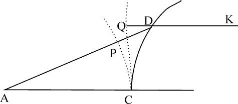
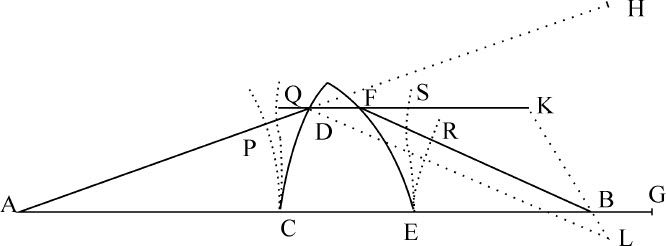

第14章
受指向极大物体各部分的向心力推动的极小物体的运动
命题94 定理48
如果两个相似的中介物相互分离，其间隔空间以两平行平面为界，一个物体受垂直指向二中介物之一的吸引力或推斥力的作用通过该空间，而不受其他力的推动或阻碍；在距平面距离相等处吸引力是处处相等的，都指向平面的同一侧方向；则该物体进入其中一个平面的入射角的正弦比自另一平面离开的出射角的正弦为一给定比值。

情形1．令Aa 和Bb 为二个平行平面，物体自第一个平面Aa 沿直线GH进入，在穿越整个中介空间过程中受到指向作用介质的吸引或推斥，令曲线HI表示该作用，而物体又沿直线IK方向离开。作IM垂直于物体离开的平面Bb ，与入射直线GH的延长线相交于M，与入射平面Aa 相交于R；延长出射直线KI与HM相交于L。以L为圆心，LI为半径作圆，与HM相交于P和Q，与MI的延长线相交于N；首先如果吸引力或推斥力是均匀的，曲线HI（伽利略曾证明过）是抛物线，其性质是，已知通径乘以直线M等于HM的平方；而且直线HM在L处被二等分。如果作MI的垂线LO，则MO与OR相等，加上相等的ON，OI，整个MN，IR也相等。所以，由于IR已知，MN也已知，乘积MI·MN比通径乘以IM，即比HM2 也为一已知比值。但乘积MI·MN等于乘积MP·MQ，即比平方差ML2 －PL2 或LI2 ；而HM2 与其四分之一的平方ML2 有给定比值；所以，ML2 －LI2 与ML2 的比值是给定的，把LI2 与ML2 的比值加以变换，其平方根，LI比ML也是给定值。而在每个三角形中，如LMI，角的正弦正比于对边，所以入射角LMR的正弦比出射角LIR的正弦是给定的。
证毕。
情形2．设物体先后通过以平行平面Aab B，Bbc C等隔开的若干空间，在其中它分别受到均匀力的作用，但在不同空间中力也不同；由刚才所证明的，在第一平面Aa 上，入射角的正弦比由第二个平面Bb 出射角的正弦为给定值；而这一在第二个平面Bb 上的入射角的正弦比自第三个平面Cc 的出射角的正弦也为给定值；这个正弦比自第四个平面的出射角的正弦还是给定值，以此类推到无限；通过将这些量相乘，物体自第一个平面入射角的正弦比自最后一个平面出射角的正弦的比为给定值。现在令平面之间的间隔趋于零，则它们的数目无限增多，使得物体受到规律已知的吸引或推斥力的作用连续运动，它自第一个平面入射角的正弦与自最后一个平面同样为已知的出射角的正弦的比，也是给定值。
证毕。

命题95 定理49
在相同条件下，物体入射前的速度与出射后的速度的比等于出射角的正弦比入射角的正弦。

取AH等于Id 作垂线AG，d K与入射线和出射线GH，IK相交于G和K。在GH上取TH等于IK，在平面Aa 上作垂线Tv 。（由运动定律推动Ⅱ）将物体运动分解为二部分，一部分垂直于平面Aa ，Bb ，Cc 等，另一部分与他们平行。沿垂直于这些平面方向作用的吸引或推斥力对沿平行方向的运动无影响，所以在相等时间里物体沿该方向的运动通过直线AG与点K以及点I与直线d K之间的相等的平行间隔；即在相等的时间里画出相等的直线GH和IK。所以入射前的速度比出射后的速度等于GH比IK或TH，即等于AH或Id 比v H，即（设TH或IK为半径）等于出射角的正弦比入射角的正弦。
命题96 定理50
在相同条件下，且入射前的运动快于入射后的运动，则如果入射线是连续偏折的，物体将最终被反射出来，且反射角等于入射角。

设物体与前面一样在平行平面Aa ，Bb ，Cc 等等之间通过，画出抛物线弧；令这些弧为HP，PQ，QR等。又令入射线GH这样倾斜于第一个平面Aa ，使得入射角正弦比正弦与之相等的圆半径，等于同一个入射角正弦比由平面Dd 进入空间Dde E的出射角的正弦；因为现在该出射角正弦与上述半径相等，出射角成为正角，因而出射线与平面Dd 重合。令物体在R点到达该平面；因为出射线与平面重合，物体不可能再达到平面Ee 。但它也不可能沿出射线Rd 前进；因为它总是受到入射介质的吸引和推斥。所以，它将在平面Cc 和Dd 之间返回，画出一个顶点在R（由伽利略的证明推知）的抛物线弧，以与在Q入射的相同角度与平面Cc 相交于q ；然后沿与入射弧QP，PH等相似且相等的抛物线弧qp ，ph 等行进，与其余平面以与入射时在P，H等处相同的角度在p ，h 等处相交，最后在h 以与在H处进入同一平面相同的倾斜离开第一个平面。现设平面Aa ，Bb ，Cc 等的间隔无限缩小，数目无限增多，使按已知规律作用的吸引或推斥力连续变化；则出射角总是等于对应的入射角，直至最后出射角等于入射角。
证毕。
附注
这些吸引作用极为类似于斯奈尔（Snell）发现的光的反射和折射角有给定正割比，因而也像笛卡儿所证明的那样有给定正弦比。因为木星卫星的现象已经表明，许多天文学家已经证实，光是连续传播的，从太阳到地球大约需要七八分钟。而且，空气中的光束（最近格里马尔迪〔Grimaldi〕发现，我本人也试验过，光通过小孔射入暗室）经过物体的棱边时，不论物体是透明的或不透明的（如金、银或铜币的圆形成方形边缘，或刀、石块、玻璃的边缘）都像受到它们的吸引一样而围绕物体弯曲或屈折；最靠近物体的光弯曲得最厉害，如像受到最强烈的吸引一样；我也十分仔细地观察了这一现象。距离物体较远的光束弯曲较小；反而远的光束则向相反方向弯曲，形成三个彩色条纹。图中s 表示刀口，或任意一种楔形As B；gowog ，fnunf ，emtme ，dlsld 是沿着弧owo ，nun ，mtm ，lsl 向刀口弯曲的光束；弯曲的大小程度随到刀口的距离而定。由于光束的这种弯曲发生在刀口以外的空气中，因而落在刀口上的光束必定在接触刀口之前已首先弯曲。落在玻璃上的光束情形也相同。所以，折射不是发生在入射点，而是由光束逐渐的、连续的弯曲造成的；折射部分发生于光束接触玻璃前的空气中，部分发生于（如果我没有想错）入射以后的玻璃中；如图中所示，光束ckzc ，biyb ，ahxa 落在r ，q ，p ，弯曲发生在k 和z ，i 和y ，h 和x 之间。所以，因为光线的传播与物体的运动相类似，我认为把下述命题付诸光学应用是不会有错的，在此，完全不考虑光线的本质，或探究它们究竟是不是物体；只是假定物体的路径极其相似于光线的路径而已。


命题97 问题47
设在任意表面上入射角的正弦与出射角的正弦的比为给定值；且物体路径在表面附近的偏折发生于极小空间内，可以看做是一个点；求能使所有自一给定处所发生的小球会聚到另一给定处所的面。

令A为小球所要发散的处所；B为它们所要会聚的处所；CDE为一曲线，当它绕轴AB旋转时即得到所求曲面；D，E为曲线二个任意点；EF，EG为物体路径AD，DB上的垂线，令点D趋近点E；使AD增加的线段DF与使DB减少的线段DG的比，等于入射正弦与出射正弦的比。所以，直线AD的增加量与直线DB的减少量的比为给定值；因而，如在轴AB上任取一点C，使曲线CDE必定经过该点，再按给定比值取AC的增量CM比BC的减量CN，以A，B为圆心，AM，BN为半径作两个圆相交于点D；则该点D与所要求的曲线CDE相切，而且，通过使它在任意处相切，可求出曲线。
完毕。

推论Ⅰ．通过使点A或B某些时候远至无穷，某些时候又趋向点C的另一侧，可以得到笛卡儿在《光学》和《几何学》中所画的与折射有关的图形。笛卡儿对此发明秘而不宣，我在此昭示于世。
推论Ⅱ．如果一个物体按某种规律沿直线AD的方向落在任意表面CD上，将沿另一直线DK的方向弹出；由点C作曲线CP，CQ总是与AD，DK垂直；则直线PD，QD的增量，因而由增量产生的直线PD，QD本身相互间的比，将等于入射正弦与出射正弦的比。反之亦然。
命题98 问题48
在相同条件下，如果绕轴AB作任意吸引表面CD，规则的或不规则的，且由给定处所A出发的物体必定经过该面；求第二个吸引表面EF，它使这些物体会聚于一给定处所B。

令连线AB与第一个面交于C与第二个面交于E，点D为一任意点。设在第一个面上的入射正弦与出射正弦的比，以及在第二个面上的出射正弦与入射正弦的比，等于任意给定量M比另一任意给定量N；延长AB到G，使BG比CE等于M－N比N；延长AD到H，使AH等于AG；延长DF到K，使DK比DH等于N比M。连接KB，以D为圆心，DH为半径画圆与KB延长线相交于L，作BF平行于DL；则点F与直线EF相切，当它绕轴AB转动时，即得到要求的面。
完毕。
设曲线CP，CQ分别处处垂直于AD，DF，曲线ER，ES垂直于FB，FD，因而QS总是等于CE；而且（由命题97推论Ⅱ）PD比QD等于M比N，所以等于DL比DK，或FB比FK；由相减法，等于DL－FB或PH－PD－FB比FD或FQ－QD；由相加法，等于PH－FB比FQ，即（因为PH与CG，QS与CE相等），等于CE＋BG－FR比CE－FS。而（因为BG比CE等于M－N比N）CE＋BG比CE等于M比N；所以，由相减法，FR比FS等于M比N；所以（由命题97推论Ⅱ）表面EF把沿DF方向落于其上的物体沿直线FR弹射到处所B。
证毕。
附注
用同样的方法可以推广到三个或四个面。但在所有形状中，球形最适于光学应用。如果望远镜的物镜由两片球形玻璃制成，它们之间充满水，则利用水的折射来纠正玻璃外表面造成的折射误差到足够精度不是不可能的。这样的物镜比凸透镜或凹透镜好，不仅由于它们易于制作，精度高，还由于它们能精确折射远离镜轴的光线。但不同光线有不同的折射率，致使光学仪器终究不能用球形或任何其他形状而臻于完美。除非能纠正由此产生的误差，否则校正其他误差的所有努力都将是徒劳的。